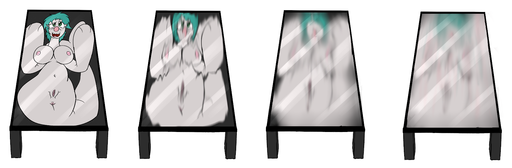

Tabletop Stimulator
Written by TwistedSnakes
Raffle Prize for Suk0tto
Illustrated by Suk0tto
"Are you sure it's here?" Sukutto asked as the primarina peered sceptically through the doorway into a white lobby, bare except for an empty reception desk.
"Yeah, yeah!" Sapphire the buizel nodded as he pushed Sukutto from behind into the building.
"This doesn't look like a modelling agency," the primarina protested. "Who sets up a modelling agency in a warehouse in the middle of the industrial district anyway?"
"It's a legitimate agency," the buizel took the lead and pulled Sukutto towards the desk. "Aldin! Aldin!" he called out loud, his voice echoing through the deserted warehouse.
"There's nobody here Sapphire," the primarina rolled her eyes.
Just then, a door in the opposite wall opened and a muscular incineroar stepped through it into the lobby wearing a white tank top and black gym shorts. "Ayy Sapphire, you're back. I see you've brought your friend along," he nodded towards Sukutto.
"Yeap yeap!" Sapphire nodded.
"Well nice to meet you. Sukutto, was it?" the incineroar extended his hand to the primarina.
"Yeah," she nodded.
"Aldin," he introduced. "So, you're here for the modelling gig I take it? Did Sapphire tell you what you're signing up for?"
"I told her it'll be a photo shoot," the buizel grinned.
"I see, I see," Aldin nodded, barely hiding a grin of his own. "Come, follow me to the back room," he turned around and led the other two Pokémon to the door he came in from.
The three of them went through the door that Aldin came in from, entering another section of the warehouse. Unlike the clean and empty lobby that they were in, this area of the warehouse was cluttered with industrial machinery and glass panels. Only a small area was cleared out to make space for a white backdrop surrounded by photography equipment. High-end cameras on stood on tripods, all of them pointing to a smooth, raised counter big enough to fit a mid-sized Pokémon if they laid down on it.
Aldin pointed to the counter and looked at Sukutto. "Strip and lie on the table," he instructed.
"Uhh, what kind of modelling gig is this?" the primarina squinted suspiciously at the incineroar.
"You'll see," Aldin brushed her question off. Noticing Sukutto's glare, he shrugged "Hey, even if you don't trust me, you trust Sapphire right?"
Sukutto turned to Sapphire who nodded enthusiastically at her. She rolled her eyes. "Fine," she conceded. She gingerly pulled off her jacket and folded it in the corner too.
"Underclothes too," Aldin nodded as he tended to a machine with a huge roller beneath it.
The primarina reluctantly took off her bra, tail sleeve and underwear and folded them on top of her jacket. She slid to the counter and laid on top of it. The hard ceramic countertop against her back was cold against her bare skin, making her shiver.
"So, do you need me to pose or anything?" Sukutto asked as she stared at the ceiling.
"No, no. This is fine, just lay down there," there was the sound of shifting metal and rolling wheels as Aldin pushed something over to the foot of the counter.
"What are you doing?" she asked.
Just then, something heavy was lowered onto her tail fins, pressing it down.
"Hey! What are you doing?" Sukutto protested in a combination of surprise and panic.
"Flattening you!" Sapphire explained gleefully.
"You're what?!" Sukutto lashed out at the buizel as she tried to pull herself off the table but her pinned tail stopped her from going anywhere. "Let me go!"
Aldin flicked a switch on the machine and the roller started turning as it slowly crept up her body. "Relax, it's gonna be over quickly," he assured. "Sapphire, could you pin her arms down? I don't want her to be misaligned during the flattening."
"Okay!" the buizel happily went to the other end of the counter and pulled the struggling primarina's arms above her head.
"Let go of me!" she seethed.
"Chill, it'll just be for a few days!" the buizel grinned.
"A few days?!" she yelled. "I can't stay for a few days. Let me out now!"
Sapphire ignored her outbursts as the machine continued its steady climb up her tail, flattening it to a thin sheet as it came out the other side of the roller. It didn't hurt but Sukutto felt an uncanny sensation as her body was compressed to something the thickness of a sheet of paper.
"Hey! Let me go!" she demanded but her pleas were ignored by the other two Pokémon as the machine continued its flattening process. It slowly inched its way up the rest of her tail, leaving her bottom half flat against the counter.
Her womanhood was next. Without a sound, the firm rollers pressed against her slit and squeezed against it.
"Mnnngn..." she moaned as her sensitive parts were pressed tightly against itself, giving her the feeling of erotic stroking within her warm, vaginal flesh. Her body relaxed as she enjoyed the burst of involuntary pleasure.
Sapphire let go of her arms and Sukutto stayed where she was, lost in her own world of ecstasy, The press finished with her hips, leaving just a thin line that looked like it could've been a printed design on a sheet of paper. Her waist was next, disappearing under the roller and appearing on the other side as a narrow hourglass-shaped sheet.
Sukutto's struggles got less and less desperate as she calmed down. She didn't sign up for this, but perhaps it wasn't so bad after all. All she wanted now was for more pleasure. And more she was going to get: the machine had moved up to her chest where it pressed against the base of her bosom. Without hesitation, the rubber edges of the pulled the base of her breasts under the roller and compressed them against the counter.
She wanted to moan as she felt the firm squeezing of her breasts but the machine had already flattened her lungs, expelling all of the air within. Before she knew it, the rest of her body below her neck was ironed out flat on the ceramic countertop. The roller bumped against her chin before pulling it under. Her eyes saw the roller press over her face, turning everything dark for a few moments before everything was bright again. The machine flattened out the rest of her head and arms, leaving behind a thin sheet that used to be Sukutto.
Sapphire was crouched at the side of the table as he watched the entire process in fascination. Reaching out a flipper, he stroked it against the primarina's flattened midriff. She wanted to squirm in pleasure but her flattened body couldn't move. Only her body shivered and her eyes glazed in ecstasy in response.
"With her body compressed, everything feels way more intense and sensual," Aldin explained. "Almost to the point of being erotic," he seemed to relish the fact as he explained, stroking a clawed finger around Sukutto's neck and collarbone.
The primarina wasn't paying any attention to Aldin's words. Instead, her mind was consumed by the pure bliss that the incineroar was creating as he stroked her body. On one hand, the intense sensations were overwhelming, but on the other, she wanted more of it. Yet apart from changing her facial expressions, she couldn't move an inch. She gave up and gave in to Aldin's relentless stroking, lost in ecstasy as her flattened body twitched almost unnoticeably.
"Well, let's wrap up, shall we?" he asked. Not waiting for Sapphire to respond, he picked up a large panel of glass with a raised edge along the sides. He carefully laid it over the counter, carefully adjusting it over Sukutto's trembling body as he slowly fitted it over the countertop. The borders of the glass frame sat nicely over the edges of the counter and the glass compressed the primarina's body.
Sukutto could feel the glass stick to her skin as if a mild adhesive was coating it. What was this about? What was the glass panel for anyway? Her confusion quickly gave way to the huge burst of pleasure as the glass pressed against literally every inch of her body. With a smirk, he slid his finger over the glass and traced the sides of the primarina's body, knowing full well that she would feel his fingers acutely.
He slowly traced out the outlines of Sukutto's chest, circling each of her breasts as he spiralled in, applied a little pressure on her nipple before spiralling out again. Out of instinct, Sukutto wanted to moan and cry out from the overwhelming satisfaction she was experiencing. Every stroke and press made her want to shudder and squirm but the glass had her helplessly trapped.
Aldin grinned as he continued his motions, a combination of erotic stimulation and agonizing torment to the powerless primarina. His other paw went to Sukutto's underside as he fondled her exposed slit, stroking it up and down in time with his movements on her chest.
The incineroar's caressings slowly sped up as he watched Sukutto's face. Her eyes were lost in ecstasy from his expert stroking and he smiled, pleased with himself. He continued to rub against the glass in increasing fervour, working the primarina up to the edge.
Sukutto was going mad with pleasure. The glass was stimulating her entire body as if every bit of skin was an erogenous zone and the incineroar's stroking only added to that. She shouldn't let herself go in the presence of others but the intensity was too much to bear. She couldn't keep holding back. With a mental moan, she came and her sticky fluids smeared across the front of the glass.
"Perfect," Aldin nodded before turning to Sapphire, "Thanks for your help, you can go now. We'll keep her up for display for a few days and then I'll let her out."
The buizel nodded his head gleefully, "Sure! Make sure she has a little 'fun', alright?"
"Will do," the incineroar nodded as he watched Sapphire bounce out of the warehouse. Turning to the flattened primarina, he smirked. "Now to preserve the moment of ecstasy...forever."
He slowly lifted the large frame off the counter and flipped it over, bringing the primarina's flattened body with it. He centred it on the countertop before going to the corner and hauling over a large metal tin of industrial glue.
Opening up the tin with a claw and dipping a rolling brush in the glue, Aldin began spreading the adhesive all over the insides of the frame. Feeling the sticky liquid spreading across her body, Sukutto panicked. Even though she couldn't see what was happening, she could infer that she was getting glued into the frame. Yet as the roller brushed against her back and body, the feelings of pleasure washed away thoughts of everything else.
Another glass panel was pressed against her back, lining up with the edges of the bottom glass frame as it squeezed the glue into a thin, even layer. The pressure forced the glue into gaps around the primarina's body, sealing it against the two thick panels of glass.
Aldin grunted as he flipped the heavy glass panel over so that the encased primarina faced the ceiling. Sukutto stared at the roof of the warehouse, feeling confused by emotions of alarm and bliss.
"I'll leave the glue to dry for now," he loomed over Sukutto menacingly, "But I'm not done with you yet."
Sukutto stared at the ceiling of the nightclub as coloured lights flashed on and off: the same scene she had been forced to watch for the past few weeks or so. Or has it been months? She had lost track of time in her glass prison. Aldin had glued her to a rectangular block which formed the base of the table that she was now a part of.
She was then sold to a nightclub owner who had installed her in a section of the club for its patrons to use. Each day, Sukutto would endure a night of endless sensual pleasure as guests put their cold drinks on the table and stroked the trapped primarina inside. When the club closed in the early hours of the morning, an employee would wipe her table with a cloth, ending her "shift" with what she felt as an erotic massage. The glass would be left clean and clear except for additional fluids that had Sukutto had squirted, adding to the layers of dried ejaculate that she had accumulated under the glass.
Some nights, guests would use her to have sex on, rocking the table with their thrusting motions as gravity squeezed their bodies against Sukutto's, flooding and overwhelming her senses. The offending guests would then enjoy the slight shake of the table as they carried on with their carnal endeavours, continuing a vicious cycle of movements and pleasure.
The shaking would also shift the glass tabletop against its base, smearing a little of the primarina's features and leaving blurred lines where colour separations used to be. Yet all she could do was squirm a tiny bit, unnoticed by everyone else except the sexual deviants on top of her.
Tonight, a pair of salazzles were occupying one side of the table, one of them seated on top of Sukutto's slit and the other mashing her pussy against her partner's crotch like there was no tomorrow, slowly but unwittingly wearing away had her features. Not that she could worry about that: all she wanted at that moment was more and more arousal. The scent of the two salazzles in heat only served to drive her crazier, turning her on without making it any easier to cum. All she could do is shake the table in silent begging.
Just then, a buizel came over and sat at the other end of the table. Ordering a cocktail, he sat back and watched the two horny patrons get it on just in front of him, slowly getting aroused himself,
The cocktail was soon delivered by a grovyle waiter in a sharp-looking tuxedo and the buizel thanked him before putting the cold drink on top of the primarina's collarbone. The table shook a little, sending vibrations through the neon blue liquid in the cup.
Before long, the two salazzles finished up their deeds on the table, moving off to find a private room for them to further explore each other's bodies. The buizel watched them leave before glancing around the club.
His eyes fell on the streaks of colour encased in the glass table. Hmm...it looked familiar. A little too familiar, in fact. But the flashing lights obscured the primarina's colours and the wear and tear had faded her features. To top it all off, the buizel was getting a little tipsy from the strong cocktail.
He shook his head. It couldn't be Sukutto. After all, she would've been released and unflattened a few weeks ago. Not that he had heard from her, but there was a possibility she came back for more "modelling" after her first enjoyable experience. He grinned at that thought before stumbling his way out of the bar and made his unsteady way home.

Back in the bar, Sukutto continued staring at the ceiling. She would be there for many years to come, her body slowly eroded as people moved the glass table, smearing and mixing her body with the glue encased in the glass. She would be spread across the inside of the table until the glass top would be coloured a mixture of indiscernible white, blue, and pink. Would she still be able to watch the ceiling? Would she even be conscious by then?
What did it matter anyway? So long as she enjoyed the ecstasy as people used her body to hold their alcoholic drinks and support their sexual advances while it all lasted. And that would last a long time indeed.
~ End ~